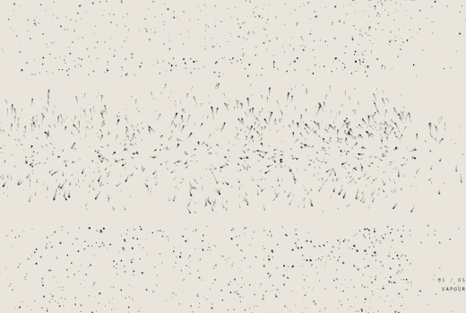

Matter, unmade
and remade.
A four-track sculpting sampler for the M-VAVE FM-1. Bring sound in over Bluetooth or USB, then grind it, filter it, stain it and let it settle.
A four-track sculpting sampler for the M-VAVE FM-1. Bring sound in over Bluetooth or USB, then grind it, filter it, stain it and let it settle.
Install
Chrome or Edge on a computer, the FM-1 switched on and connected by USB. The page talks to the FM-1 over USB MIDI using M-VAVE's own update protocol.
The latest published build, or a .fwsc file you built yourself.
Allow MIDI access when the browser asks. Close other MIDI software first. The page works out how to install from whatever the FM-1 runs now.
Keep the cable in, the FM-1 on and this tab in front until it restarts. One to three minutes.
In motion

About
Each track takes a sample from the FM-1's flash bank, a live loop, a playable keyboard voice, or the live input itself, then passes it through grains, a filter and colour into a shared delay and reverb. Four modulators per track, four macros, eight scenes to morph between, and a step sequencer with parameter locks.
Try it first in the browser emulator: the same code, running in this page's browser.
Viscera is early: each release builds and passes M-VAVE's update checks, but it hasn't been tested on an FM-1 yet. Two sequencers per track: steps, and CAROM, where notes bounce around a box and play when they hit the walls.
Before you flash